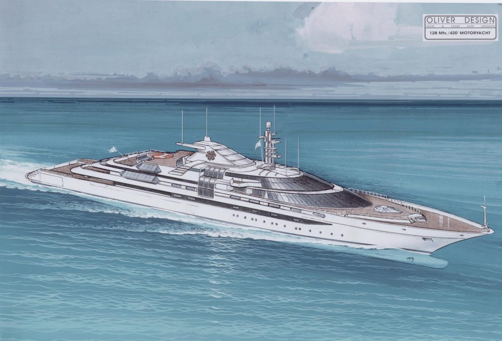

Bienvenido a Mundo Naval
Soy Francisco García de Vinuesa Prieto, un joven apasionado del mundo naval que está terminando sus estudios de Ingeniería Naval. Este blog es mi bitácora para compartir la belleza, evolución e importancia del diseño naval en el mundo actual.
Ver Artículos